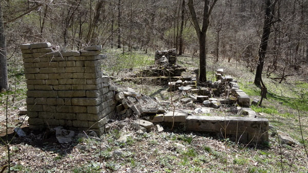
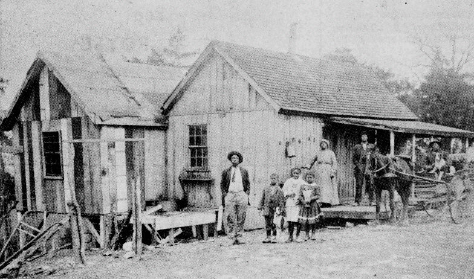

The History of Lower Howard's Creek
The following sites within Lower Howard’s Creek Nature and Heritage Preserve (LHC) are historically significant.
Salt Spring Trace
The Salt Spring Trace was one of the first market roads created in Kentucky. It followed an old buffalo trail that crossed the Kentucky River.

Robert Martin House
Home of Robert Martin, great-grandson of John Martin who settled Lower Howard’s Creek. The home is now in ruins. It was a two-room cabin built in the mid-1850s.
John Martin House and Mill
Remnants of a homestead and flour mill attributed to John Martin, settler of Lower Howard’s Creek

Hieronymus Place
Site of a historic log cabin built in the late 1700s. This cabin was later the site of Clark County’s “bloodiest” crime - a triple murder on January 3, 1939
